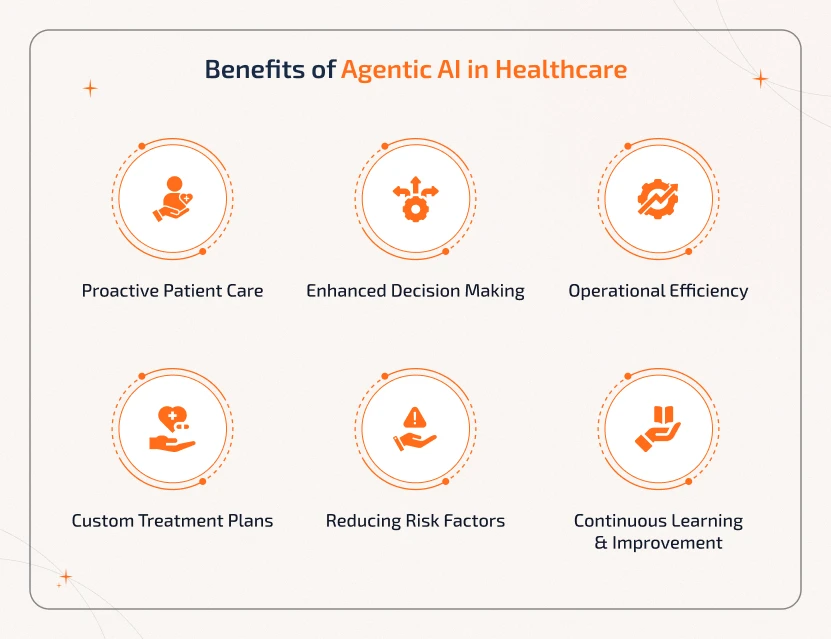
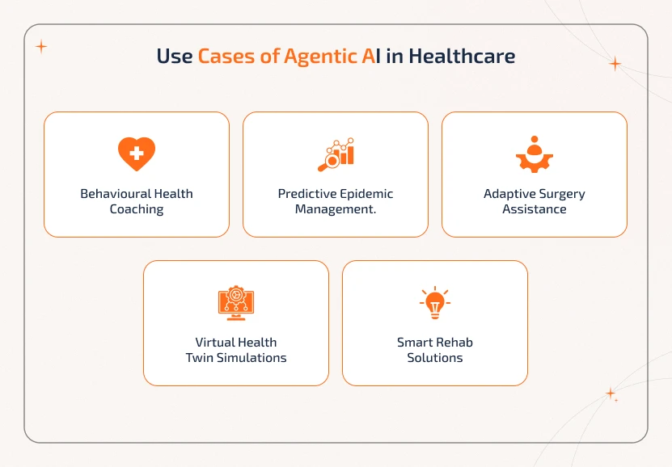
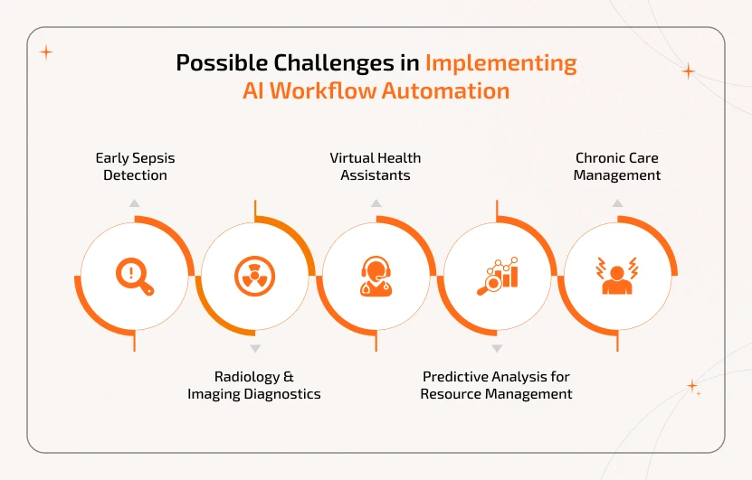

Greetings to current entrepreneurs and future innovators! Just imagine a world where AI doesn’t just act with predefined rules, but acts on its own and makes business-centric healthcare decisions in real-time. Astonishing, isn’t it! However, that world is not that far. Agentic AI in healthcare started transforming hospitals, clinics, and patient care by autonomously suggesting treatments and predicting health risks before an anomaly invades. This isn't any science fiction. It is what agentic AI development in precision medicine is unfolding in today’s landscape.
Gone are the days when AI was just a passive tool to carry out generic tasks. The introduction of agentic AI for patient care brings intelligence with initiative, which blends real-time data analysis with advanced decision-making capabilities for optimizing operations. Moreover, agentic AI makes a huge impact on patients, providing personalized care and proactive treatment recommendations tailored to individual needs.
What is Agentic AI? - An Overview
Agentic AI is a type of Artificial Intelligence which is designed to act independently. It makes its own decisions and carries out tasks with minimal human intervention. Unlike the traditional AI software that gathers only information or provides suggestions, agentic AI can take proactive measures, learn from outcomes, and evolve to changing trends.
These intelligent systems mix latest technologies like Machine Learning, contextual understanding, and advanced algorithms to make valuable decisions that can be improved over time. This approach empowers professionals from a wide range of industries to deliver faster and precise outcomes.
Self-Driven AI
Transform the way you work with intelligent agents to deliver speed, precision, and growth.
What is Agentic AI in Healthcare About?
In the healthcare sector, agentic AI goes beyond generic support. It actively participates in patient engagement through agentic AI and smart decision-making. These advanced AIs can analyze patients’ medical data, detect usual patterns, and proceed with autonomous actions, assisting medical staff and doctors in real-time.
From pinpointing early warning signs of sickness to recommending personalized treatment plans, agentic AI provides an extra layer of intelligence. AI for healthcare providers assists in acting fast and responsibly.
Autonomous decision-making combined with advanced systems stimulates hospital management using agentic AI and boosts patient monitoring, and gives preventive care strategies. Moreover, Agentic AI’s capability to continuously learn from outcomes allows the system to boost performance, creating a responsive healthcare environment. This will benefit both practitioners and patients.
How Does Agentic AI Differ From Generative AI?
Generative AI and agentic AI, there are the two distinct approaches to Artificial Intelligence, each with unique medical AI applications and capabilities. Moreover, understanding the key differences will help you clarify how an AI can solve tasks in diverse ways.
| Features | Generative AI | Agentic AI |
|---|---|---|
| Need | Creates useful content and predicts outcomes based on predefined data | They can act autonomously, make decisions and execute tasks by themselves |
| Human Dependence | Needs proper guidance and necessary prompts | Only minimal human intervention is required |
| Role in Healthcare | It can draft a report, summarize content, and perform predictive insights | They can monitor patients, suggest treatments, and optimizes operations |
| Proactivity | Reactive | Proactive and adaptive |
| Outcome | Information-focused | Action-focused, boosts patient outcomes |
As a result, generative AI informs, whereas agentic AI performs. By holding each other's hands, they can create a healthcare ecosystem where insights can turn into meaningful actions, helping businesses work smarter and deliver better care.
In What Ways Does Agentic AI Impact Healthcare?
Agentic AI in healthcare sparks before the fire to escalate the domain from reactive to proactive care. By analyzing the patient's condition autonomously and spotting potential issues before they escalate, Agentic AI allows medical teams to act early, boost outcomes, and prevent complications. This shift towards anticipatory healthcare can redefine the standard for patient safety and wellness.
The impact is not limited only to clinical care or hospitals, agentic AI can do more than that. It can streamline administrative and operational tasks, like resource allocation, compliance monitoring, and appointment scheduling. While handling routine processes autonomously, the healthcare providers can focus on what’s more important.
Leverage our expertise to build agentic AI that makes independent data-driven decisions.
Benefits of Agentic AI in Healthcare
Agentic AI brings numerous benefits to the healthcare industry, like bringing intelligence, autonomy, and efficiency to patient care. Here are some of the primary ones that the healthcare sector benefits from.

Proactive Patient Care
Leveraging the ability to predict
potential health defects, agentic AI provides proactive interventions. By detecting
early illness signs and suggesting preventive solutions, agentic AI ensures a
reduction in hospital complications.
Enhanced Decision Making
In the real world, agentic AI
analyzes huge amounts of medical data and helps medical staff to make more informed
decisions. It identifies regular patterns and suggests evidence-based actions to
improve accuracy in agentic AI-enabled diagnostics.
Operational Efficiency
Healthcare workflow automation
initiates administrative and routine clinical tasks, like patient monitoring and
resource allocation, it minimizes individual burden. Also, by streamlining
operations, hospitals can save significant time, allowing staff to focus on bigger
fish.
Custom Treatment Plans
By analyzing the patient data
continuously and learning from outcomes, agentic AI, on the other hand, recommends
customized treatment strategies. This personalization enhances patient satisfaction
and levels up the likelihood of successful interventions.
Reducing Risk Factors
Without giving any excuses, agentic
AI in medical research do identify potential risks in patient care, like treatment
conflicts and medication errors. Addressing these kinds of issues early enhances
patient safety and helps healthcare providers to maintain high standards of care.
Continuous Learning & Improvement
Constant improvement in the healthcare sector with agentic AI
ensures that the practices remain updated, efficient and surprisingly effective in
addressing the patient’s needs.
Our cutting-edge solutions empower businesses to automate smarter and faster to unlock full potential.
Use Cases of Agentic AI in Healthcare
Agentic AI isn’t just a healthcare assistant that staff can make use of. Moreover, it’s like a pioneer to the new healthcare era, helping in predicting, preventing, and personalizing patient care. Here are the real-time use cases of Agentic AI in healthcare.

Behavioural Health Coaching
Agentic AI can even detect
subtle cues in a patient’s speech patterns, facial expressions, and biometric data.
This approach points out early signs of depression, stress, and anxiety. By
monitoring these signs continuously, it can offer personalized interventions, like
recommended exercises, alerts to caregivers, and medication reminders.
Predictive Epidemic Management
AI agent in healthcare will gather and analyze data
from global health reports, climatic conditions, and population movements
autonomously to anticipate potential disease outbreaks. This kind of predictive
capability minimizes strain on the healthcare industry and enables targeted resource
allocation.
Adaptive Surgery Assistance
While performing complicated
surgeries, agentic AI integrates possible data from imaging, sensors, and feedback
to help surgeons in making quick decisions. They can suggest precise medical
instrument adjustments or surgical paths that can reduce the risk and improve
patient outcomes.
Virtual Health Twin Simulations
Unsurprisingly, agentic AI
can build a digital twin of an individual patient, which stimulates their
physiological responses to medications and treatments. This allows healthcare
providers to predict potential outcomes without experimenting with the operation
directly into the patient. It reduces trial-and-error treatment and empowers
patients with actionable insights.
Smart Rehab Solutions
In healthcare,
rehabilitation often requires regular monitoring and adaptation based on the
patient’s progress. This will actually strain the healthcare staff. So, in order to
rectify this issue, agentic AI creates adaptive rehab routines that respond to
real-time performance and stimulate recovery speed.
Real-World Applications of Agentic AI in Healthcare
In today's world, agentic AI plays a vital role, helping doctors, nurses, and patients in many ways. Here are some of the major real-world applications of agentic AI in healthcare sectors.

Early Sepsis Detection
One of the efficient proprietary
Machine Learning tools and an agentic AI platform, Epic Sepsis Model (ESM) monitors
patients’ vitals in real-world and alerts clinicians when the sepsis risk is too
high. Hospitals implementing this system have reported up to 20% reduction in
mortality rates.
Radiology & Imaging Diagnostics
Agentic AI in radiology and imaging
autonomously analyze CT scans and X-rays to pinpoint conditions like breast cancer,
fractures, and lung nodules. Recent studies show that leveraging AI in telemedicine
will improve the diagnostic accuracy by 30-40%, reducing radiologists’ review time.
Virtual Health Assistants
A few leading platforms employ
agentic AI to provide personalized guidance and symptom checks. These AI systems
have drastically decreased unnecessary doctor visits by 25 percentage. This improves
patient adherence to medications and boosts regular care even outside hospitals.
Predictive Analysis for Resource Management
From ICU bed
occupancy to ventilator availability, agentic AI systems are being deployed across
hospitals to forecast resource demands. By deeply analyzing admission patterns and
seasonal trends, these systems minimize resource wastage and also guarantee timely
care delivery during crucial periods.
Chronic Care Management
Agentic AI,
in the meantime, delivers specific treatment pathways for such patients who are
battling with long-term illnesses like cancer, heart disease, or diabetes. This
enables the caretaker teams to make faster data-driven decisions, improving
patients’ quality of life.
Get benefits from agentic AI to overcome real-world hurdles and drive measurable success.
Challenges and Considerations for Agentic AI Adoption
Even though agentic AI promises a rapid transformation, they do come with practical and ethical AI challenges in healthcare. Here are the six major hurdles that healthcare organizations must address for a smooth and responsible adoption.
Linking with Existing Systems
In healthcare institutions,
most of the staff still depend on outdated systems, which can create barriers when
it comes to AI integration. Implementation of agentic AI tools with the existing
architecture requires careful planning.
Data Privacy & Security
For healthcare organizations,
securing the patient’s information remains a major concern. Leakage of sensitive
information can lead to chaos and break the trust with the organization. So, when
implementing agentic AI, ensuring compliance with data protection law is crucial.
Financial & Resource Constraints
For startups and
small-scale enterprises, designing, developing and implementing healthcare AI
solutions can be inflexible due to high initial cost. Insufficient technical
resources, limited budgets, and technical resources can often reduce AI adoption,
especially in small hospitals and clinics.
Bias & Algorithmic Fairness
Agentic AI learns from past
data to deliver possible results. And if the data is biased, the results can be
biased too. So, in order to rectify the issue, continuous monitoring and updates are
crucial to ensure AI recommendations are fair and benefit all patients equally.
Limited IT Expertise
Doctors and
nurses will definitely need extra time to understand, trust, and adapt to these
systems over time. Without proper training, even the most advanced AI technology can
be unused or distorted in real-world care.
Leverage next-gen AI that evolves day by day and transforms everyday obstacles into innovation paths.
Empower the Future of Healthcare With Agentic AI
The future of the healthcare realm is going to be reshaped by agentic AI. In which the intelligent systems will anticipate user needs, suggest interventions, and continuously learn from evolving medical data. This future technology vows an innovative shift from reactive care to proactive and predictive healthcare. It assures early detection of potential diseases, personalized treatment strategies, and reliable patient journeys.
When we look ahead, AI will act as a suitable catalyst that fuels innovation, helping hospitals, clinics, and medical centres to operate more efficiently. At the same time, it expands access to quality care. By blending AI-driven insights with human expertise, the future of AI in medicine is assured to become more responsive and be able to tackle challenges that we have only begun to think of in the current state.
Wrapping Up!
To conclude, agentic AI is really making a huge impact and changing the way we usually think about healthcare. It makes the sector smarter, faster, and more personal. Instead of replacing doctors and staff, it empowers them by giving superior insights to make better decision-making capabilities and boosts focus on what really matters for patients.
As the healthcare sector evolves, agentic AI will continue its routine, which is driving innovation and streamlining processes. Also, it does give proactive and patient-centred care. Healthcare’s future is not just about technological advancement; it's more about creating a system that act faster, smarter, and truly human-focused.